是使得这个方程成立的所有
的值，所以上面的等式一定是原始方程的另一种形式。现在，如果你用通常的办法把括号乘开，那么这个方程变为
是使得这个方程成立的所有
的值，所以上面的等式一定是原始方程的另一种形式。现在，如果你用通常的办法把括号乘开，那么这个方程变为现代欧洲早期在代数学方面有两个伟大的进步：一是得到了一般三次方程和四次方程的解法，二是发明了现代字母符号体系，系统地使用字母代表数。这里所说的“现代欧洲早期”指的是从君士坦丁堡的失陷（1453 年）到威斯特伐利亚和约（1648 年）之间的两个世纪。
第一个进步是由意大利北部的数学家们在大约 1520 年到 1540 年间完成的，而卡尔达诺与费拉里在 1539 年到 1540 年的合作研究是其中最富有创造力的时期。我已经在第 4 章讲述了他们的故事。
第二个进步主要是由两位法国人〔弗朗索瓦·韦达 1 和勒内·笛卡儿（1596—1650）〕完成的。与之并行的另一个发展是复数的缓慢发现，复数逐渐被人们接受，成为标准的数学工具。复数的发现更多属于算术进展（关于数），而不是代数进展（主要研究多项式和方程）。不过，我们已经介绍过，复数的发现是从代数中获得了灵感。如果画出一个“不可约”三次多项式的图像（图 CQ-6），那么它显然有 3 个实零点；然而如果你使用代数公式求解相应的方程，且不允许使用复数，那么它根本不会出现实数解！
1 说英语的数学家们一般把韦达（Viète）的名字读作“Vee-et”，母语是英语且比较顽固的人更喜欢用这个像一种著名的蔬菜汁饮料一样的名字。有时候这个名字也被写成拉丁文形式“Vieta”。
复数能成为“代数学历史聚会”的嘉宾还有其他原因。例如，复数为关键的代数概念“线性无关 ”提供了第一个线索，我随后会讨论这个概念，而且这个概念将引出向量和张量的理论，使现代物理学成为可能。如果你把 3 和 5 相加，就会得到 8：3 的性态与 5 的性态相融得到 8 的性态，好比两滴水珠的融合。但是，如果你把 3 与 5i 加起来就会得到复数 3-5i，就好比一滴油与一滴水不相融，这就是线性无关。
因此，关于复数的发现，我要讲一些必要和有趣的东西。正如我们之前所看到的，第一个严肃对待这些“怪物”的数学家是卡尔达诺。然而，第一个有信心应对复数的数学家是拉斐尔·邦贝利（1526—1572）。
※※※
邦贝利来自意大利博洛尼亚，费罗就在那里教书。他出生于 1526 年，恰好是费罗去世的那一年。因此，他是卡尔达诺的下一代人。情况常常是这样：一代人拼命去理解的事物对下一代人来说可能就容易得多。在邦贝利大约 19 岁时，《大术》出版，所以说当时他正处于受该书影响的最佳年龄。
邦贝利是一名土木工程师。他接手的第一个大项目是土地开垦工作，需要排干意大利中部佩鲁贾附近的沼泽地。这个项目从 1549 年开始，一直持续到 1560 年，获得了巨大成功，让邦贝利在其职业领域一举成名。[书ji分 享V 信jnztxy]
邦贝利非常欣赏《大术》，但他觉得卡尔达诺的解释不够清晰。就在邦贝利二十多岁时，他萌生了写一部代数学著作的雄心，这部著作要能够让一个什么都不会的初学者也能掌握这门学科。这部著作的书名是《代数》，出版于 1572 年，是在邦贝利去世前几个月才出版的，他从二十岁出头到四十多岁，在这部著作上投入了大约 25 年的时光。这部著作一定经过了多次修改和校订，不过我们知道其中有一次修订特别值得注意。
1560 年左右，邦贝利在罗马遇到了在当地大学教代数的安东尼奥·马里亚·帕齐，并与他一起讨论数学。帕齐说，他曾在梵蒂冈的图书馆里发现了一份关于算术和代数的手稿，是古希腊“某个叫丢番图”的作者写的。随后，两人仔细查阅了这份手稿，并决定翻译它。翻译最终没有完成，但毫无疑问，邦贝利在研究丢番图的手稿的过程中受到了很多启发。他把丢番图的 143 个问题收录在自己的《代数》一书中。正是由于邦贝利的这部著作，那个时代的欧洲数学家才首次了解到丢番图的工作。
回想一下，虽然丢番图没有把负数当作一个数学对象，而且也不认为它们是问题的解，但他还是允许它们忽隐忽现地出现在计算过程中，并为此制定了符号法则。卡尔达诺似乎也用类似的方式对待复数，他认为虽然复数本身没有意义，但它们是得出实数解的有用工具。
邦贝利处理负数和复数的方法更成熟。他根据外观判断负数，比丢番图更清楚地重述了符号法则：
più via più fa più
meno via più fa meno
più via meno fa meno
meno via meno fa più
在这里，“più”的意思是“正”，“meno”的意思是“负”，“via”的意思是“乘”，“fa”的意思是“得到”。这段话翻译过来就是“正正得正，负正得负，正负得负，负负得正”。
在《代数》中，邦贝利处理了不可约三次方程，得到方程
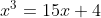
的一个解。他使用了卡尔达诺的方法，得到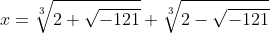
利用一些算术技巧，他算出这两个立方根式分别是
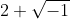
和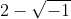
，将两者加起来就得到方程的解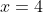
。（还有另一对解是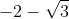
和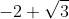
，但是邦贝利没有算出来。）这里的复数就像丢番图的负数一样，只是在从一个“实数”问题得到一个“实数”解的过程中使用的一个内部技巧而已。复数可以说起到了催化的作用。实际上，邦贝利称它们是“诡辩的”。不过，他认可它们是一种合理的工具，甚至还给出了它们相乘的“符号法则”：
più di meno via più di meno fa meno
più di meno via meno di meno fa più
meno di meno via più di meno fa più
meno di meni via meno di meno fa meno
这里的“più di meno”（来自负数的正根）指
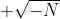
，而“meno di meno”（来自负数的负根）指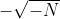
，其中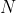
是某个正数，“via”和“fa”分别是“乘”和“得到”的意思。所以上面的法则中第三行的意思是，如果将 乘以 ，那么我们将得到一个正数。这个结论是正确的，其结果是 。通常的符号法则（负数乘以正数）得出负数，把平方根平方后得到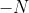
， 的相反数是 。邦贝利的《代数》对数学的理解向前迈出了一大步，但是他仍然受到缺少好的字母符号体系的阻碍。对于表达式
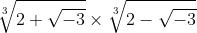
他写成：
Moltiplichisi, R.c. ⌊2 più di meno R.q.3⌋ per
R.c. ⌊2 meno di meno R.q.3⌋
在这里，“R.q.”的意思是开平方，“R.c.”的意思是开立方。注意，他还使用了括号。随着字母符号体系的发展，卡尔达诺那一代人的表述有了一些改进，但是进展并不大。
※※※
对法国人而言，16 世纪不是一段幸福的时光。弗朗索瓦一世（1515~1547 年在位）统治的大部分时间以及大部分国家财富消耗在了与神圣罗马帝国皇帝查理五世的战争中。1559 年，卡托–康布雷齐和约缔结，战争告一段落。然而，这个军队几乎消耗殆尽的国家还来不及喘息，法国天主教徒和后来通常被称为胡格诺派 2 的新教徒就开始互相残杀。
2 通常是这样称呼的，但不完全准确。胡格诺派是加尔文宗。法国新教徒不全是胡格诺派，也许有很多人不喜欢被称作胡格诺教徒。然而这个名字一直沿用至今，在这类书中，“胡格诺教徒”可以被看作“早期法国新教徒”的同义词。这个词的词源不太清楚。
直到 1598 年南特敕令颁布之后，他们才停止战争，或者从某种程度上说，法国暂停战争达 87 年。在此之前的 36 年里 3 ，法国爆发了 8 次内战，经历了一次朝代更迭（波旁王朝取代了瓦卢瓦王朝）。这些战争并非纯粹的宗教战争，地域情结、社会阶层以及国际政治等诸多因素都是这些战争的诱因。西班牙国王腓力二世，历史上最大的滋事者之一，竭尽全力把时局搅乱。至于社会阶层，胡格诺教徒在城市中产阶级中势力强大，而且有大概一半的贵族也是新教徒。相比之下，在大部分地区，农民仍然是天主教徒。
3 尽管英国在这个时期与法国保持着良好的外交关系，然而在莎士比亚的《亨利六世上篇》中有很多反对法国人的笑话和侮辱语句。
1540 年，韦达出生在一个胡格诺教徒家庭，他的父亲是一名律师。1560 年，他从普瓦捷大学毕业，获得法学学位。在他毕业后不到两年，法国宗教战争就开始了，其标志事件是香槟地区瓦西镇的胡格诺教徒遭到屠杀。
韦达后来的职业生涯受到了战争的影响。他放弃了律师工作，成为一个贵族家庭的家庭教师。随后他在 1570 年搬到巴黎，很明显他希望得到政府的雇用。当时年轻的查理九世在位，但是他的母亲凯瑟琳·德·美第奇（她也是西班牙国王腓力二世的岳母）才是真正的掌权者。为了保持王权强大且不受制于各种势力，她挑拨胡格诺教徒与天主教徒之间的关系。这决定了整个 16 世纪 60 年代到 80 年代法国的历史进程，而且其间经常发生荒谬的事情。韦达在巴黎时，正是查理九世批准于圣巴托罗缪之夜（1572 年 8 月 24 日）开始屠杀胡格诺教徒之时。然而在第二年，韦达这个胡格诺教徒却被国王任命为布列塔尼地区的政府官员。
查理九世在 1574 年去世，凯瑟琳的第三个儿子亨利三世继位。六年后，韦达回到巴黎担任这位国王的顾问。然而，凯瑟琳最小的儿子死于 1584 年，这导致瓦卢瓦王朝没有了继承人。虽然亨利三世已经结婚，而且只有 33 岁，但是他常常穿戴奢华，爱在宫廷里穿女装。人们认为他不太可能生儿子。因此，他的远亲——波旁家族纳瓦拉王国的亨利就成了王位的合法继承人。但是，亨利是一个新教徒，这让法国内外的天主教徒感到恐慌。宫廷内的明争暗斗变得更加激烈。韦达被迫离开，不得不在布尔讷夫湾的滨海博瓦尔小镇上的家里休了五年的长假。1584 年到 1589 年的这段时间是韦达数学创造力的鼎盛时期，当时他已经快 50 岁，能在数学上有这样的创造力真是奇迹。当时，法国宫廷的政治斗争错综复杂，以至于数学史学家很难知道该感谢谁。
就在韦达返回宫廷的四个月后，亨利三世被暗杀，他是在马桶上被刺死的。纳瓦拉王国的亨利成为亨利四世，成为波旁王朝的第一位国王。这位新国王是一名新教徒，这对韦达很有利，韦达很高兴成为新国王的随从。然而，即便天主教徒们无法就王位的竞争候选人达成一致，他们也不会让亨利四世顺利继位。西班牙国王腓力二世非常喜欢自己的女儿，为了她的利益同法国宫廷中的派系暗中勾结。这些密谋都是用密码写在信件上的。亨利发现身边有韦达这位数学家，便派他去破译西班牙人的密码。经过几个月的努力，韦达破译了这些密码。当腓力二世得知他自认为不可破解的密码已被破译时，他向罗马教皇抱怨说亨利使用了魔法。
※※※
韦达一直辅佐亨利四世，直到 1602 年 12 月他被宫廷免职。然后他回到家乡，在此一年后就去世了。
除了成功破译密码，韦达在为宫廷服务期间在数学上取得的辉煌成就发生在 1593 年。那一年，佛兰德斯数学家阿德里安·范·罗门（1561—1615）出版了一部名为《理想的数学》的著作，书中有一篇关于当时所有杰出数学家的调查。荷兰驻亨利四世宫廷大使向亨利指出，该书中一个法国人也没有列出。为了说明这一点，他给国王展示了罗门的书里的一个问题，作者为这个问题的解答设立了奖励。这个问题是求解一个数
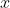
，使其满足一个一元 45 次方程：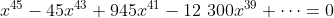
。显然，这位外交官（他似乎不善于外交）是在嘲笑没有一个法国数学家会解这个问题。亨利派人找来韦达，韦达当场就求出一个解，并且在第二天又给出了 22 个解。当然，韦达知道罗门不是随意给出这个方程的，它一定是一个罗门自己知道如何求解的方程。在那个时代，韦达有着丰富的三角学知识，而三角学正是当时发展迅猛的一个数学分支 4 。他的前两本书就是三角函数表大全。三角学是研究圆的弧长和弦长之间的数量关系的学问，其中全都是正弦、余弦及其幂的长公式。韦达根据这个方程前几项的系数快速心算后，得出他面前的式子就是将
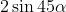
表示成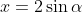
的多项式。于是，三角学帮他求出了解。（至少帮他求出了 23 个正数解。还有 22 个负数解，韦达忽略了它们，显然是因为他认为负数没有意义。）4 《科学传记大辞典》中说“韦达的所有数学研究都与他的天文学和宇宙学研究有关”。天文学和三角学的联系起源于对天体的研究以及对恒星高度的计算和预测等。
※※※
韦达 40 多岁时，在海边流放的五年里写成了一部名为《分析引论》（In artem analyticem isagoge ）的著作。该书表明了代数学向前迈进了一大步，同时也向后倒退了一小步。向前的一步是指他第一次系统地使用字母来代表数。这个想法的萌芽可以追溯到丢番图，但是韦达是第一个有效地分配字母、使一套字母可以代表许多不同的量的数学家。这就是现代字母符号体系的开端。
韦达的字母符号体系不同于以往的所有方案，它不仅仅局限于表示未知量。他把量分成两大类：一类是未知量，也就是“要求的量”（quaesita）；另一类是已知量，也就是“给定的量”（data）。他用大写元音字母 、
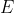
、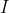
、 、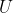
和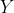
表示未知量，用大写辅音字母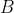
、 、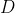
等表示已知量。例如，方程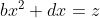
用韦达的字母符号体系表示为：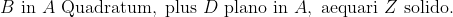
这里的 是未知量，就是我们现在的 。其他符号都是已知量。
方程中出现的“plano”和“solido”就是我上面提到的倒退的一步。韦达深受古代几何学的影响，他希望代数能够严格地建立在几何概念之上。在他看来，这迫使他遵循齐次性原则 ，也就是说，方程中的每一项必须具有相同的维度。除非另外说明，否则每个符号都代表一条适当长度的线段。在上面给出的方程中，
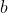
和 （韦达的 和 ）都是一维的。于是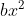
就是三维的。因此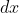
必须也是三维的，同理，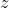
也是三维的。因为 是一维线段，所以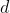
必须是二维的，因此是“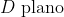
”。类似地， 必须是三维的，因此是“ ”。你能明白韦达的意思，但是这个齐次性原则限制了他的手脚，导致他的代数的某些部分难以理解。这似乎有点儿奇怪，一个能巧妙求解 45 次多项式方程的人居然被古典几何和三个维度牢牢地束缚住了。
※※※
韦达对方程的处理在某些方面不如邦贝利“时髦”。如上文所述，他反对负数，不承认负数是方程的解。他对复数的态度甚至更落后。他仅在一本关于几何学的书中处理过三次方程，在那里，他基于用
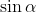
表示 的公式提出了一种三角学解法。不过，从某个方面上讲，韦达是研究方程的先驱，他点燃的蜡烛在 200 年后成为一座巨大的灯塔。在他的有生之年，这个特别的发现没有被发表。在他去世 12 年后，他的苏格兰朋友亚历山大·安德森（1582—1619）发表了他的两篇关于方程理论的论文。在题为《论方程的整理和修正》的第二篇论文中，韦达开创了一条研究方程的解的对称性的道路，也为伽罗瓦理论、群论和近世代数的诞生开辟了道路。
考虑二次方程
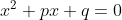
。假设方程的两个根是 和
，也就是使这个方程成立的两个数。如果
是
，或者
是
，并且
不是其他数，那么下面的等式一定成立
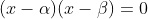
因为
和
是使得这个方程成立的所有
的值，所以上面的等式一定是原始方程的另一种形式。现在，如果你用通常的办法把括号乘开，那么这个方程变为
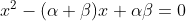
把这个方程与原来的方程进行比较，一定有
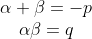
于是，我们得到了方程的根 与系数 之间的关系。我们也可以用同样的方法处理三次方程
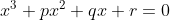
。如果这个方程的根是 、
和 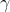
，那么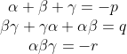
对于四次方程
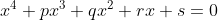
，有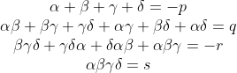
对于五次方程
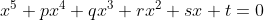
，有![\begin{matrix}\alpha+\beta+\gamma+\delta+\varepsilon=-p\\\alpha\beta+\beta\gamma+\gamma\delta+\delta\varepsilon+\varepsilon\alpha+\alpha\gamma+\beta\delta+\gamma\varepsilon+\delta\alpha+\varepsilon\beta=q\\\gamma\delta\varepsilon+\alpha\delta\varepsilon+\alpha\beta\varepsilon+\alpha\beta\gamma+\beta\gamma\delta+\beta\delta\varepsilon+\alpha\gamma\varepsilon+\alpha\beta\delta+\beta\gamma\varepsilon+\alpha\gamma\delta=-r\\\beta\gamma\delta\varepsilon+\gamma\delta\varepsilon\alpha+\delta\varepsilon\alpha\beta+\varepsilon\alpha\beta\gamma+\alpha\beta\gamma\delta=s\\\alpha\beta\gamma\delta\varepsilon=-t\end{matrix}](../images/00289.gif)
正确的阅读方式是
所有根之和
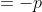
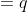
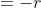
包含一个未知量的五次以下方程的这些公式是韦达首先记下来的。韦达下一代的法国数学家阿尔伯特·吉拉德（1595—1632）在《代数新发现》一书中把这些公式推广到任意次方程。《代数新发现》出版于 1629 年，是在安德森发表韦达的论文的 14 年后。艾萨克·牛顿爵士继承并发扬了……我讲得有点儿快了。
※※※
借用主持人的口吻：勒内·笛卡儿无须多做介绍。他从过军，做过官（他在战场上幸存了下来，却没能逃脱政治），他是哲学家、数学家，是波旁王朝前三任国王统治之下的法国国民。在笛卡儿成年后，发生了三十年战争、英国内战和“五月花”号移民。那是法国红衣主教黎塞留的时代、瑞典国王古斯塔夫·阿道弗斯的时代，也是弥尔顿和伽利略生活的时代。尽管笛卡儿更喜欢生活在荷兰，但他仍是法兰西的民族英雄。他的出生地当时叫拉艾，法国大革命之后为了纪念他，这个地方被重新命名为笛卡儿（普瓦捷以北 30 英里处）。同 56 年前的韦达一样，笛卡儿在普瓦捷大学获得法学学位后步入社会。
笛卡儿因两件事而闻名于世：一是写下了名言“我思故我在”（Cogito ergo sum），二是发明了以他的名字命名的坐标系，即用数对表示平面上的点的一种方式。在笛卡儿几何中（“笛卡儿几何”的英文是“Cartesian geometry”，其中“Cartesian”来源于笛卡儿的拉丁文名字“Cartesius”），标记一个点的数对是该点到两条固定坐标轴的垂直距离，这两条坐标轴是平面内互相垂直的两条直线。按照惯例，水平距离称为 ，竖直距离称为
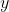
。图 5-1 是一个点的笛卡儿坐标。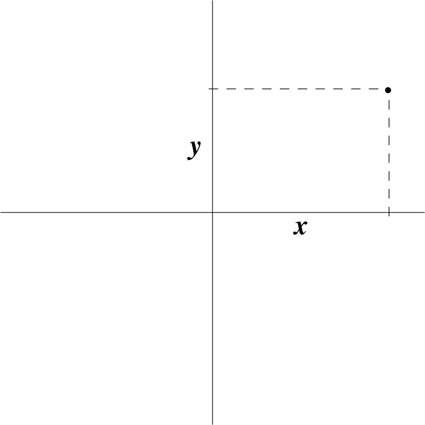
图 5-1 笛卡儿坐标系
事实上，“我思故我在 ”这句话确实是笛卡儿写的，但是准确地说，他并没有发明直角坐标系。笛卡儿的著作《几何学》（1637 年出版）包含了关于坐标系的基本想法，但是笛卡儿使用的坐标轴并不是互相垂直的。
不过，《几何学》中包含的思想确实足以引发几何学和代数学的革新——实际上是使几何学代数化。回想一下韦达的齐次性原则，它就是以数是几何对象的思维映像这个观点为基础的。甚至当韦达遇到 45 次幂时，他的思维也立刻转变为几何思考：把一段圆弧 45 等分。笛卡儿把这种方式倒过来了，他认为几何对象正是数的一个方便表示。笛卡儿给出了一个例子：两条线段长度的乘积不一定非要被看作一个矩形的面积，它也可以用另一条线段来表示。
这并不是一个原创想法，但是笛卡儿在这个基础上建立了他的几何框架，切断了连接代数与古典几何的最后绳索，让他的新“解析几何”展翅高飞。笛卡儿采用了一种更清晰、更易于处理的代数记法，进一步促成了这一点。他从 16 世纪德国代数学家那里借鉴了加号、减号和平方根符号（他在原来的平方根符号上面加了一条横线，把“√”变成“
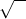
”）。他用上标来表示幂，但是平方却没用上标形式表示，仍然写成“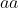
”而不是“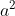
”，直到 19 世纪末，仍有数学家使用这种记法。笛卡儿最重要的贡献大概是他给我们带来了现代字母符号体系。在该体系中，字母表开头的几个小写字母表示已知数，字母表末尾的几个小写字母表示未知数。在阿特·约翰逊的著作《古典数学》（Classic Math ）中，有关于此的一个故事。
常常使用字母 来表示未知量源于一件有趣的事。在印刷《几何学》的过程中，排版人员遇到一件棘手的事情。在给文本排版时，排版人员发现字母表的最后几个字母不够用了。他询问笛卡儿，在书中的诸多方程中，使用字母 、 还是 是否很重要。笛卡儿回答说，用这三个字母中的任何一个字母表示未知量都没有区别。于是排版人员就选择用 表示大多数未知量，因为字母 和 在法语中的使用频率高于 。
事实上，当你在阅读《几何学》时，你会觉得是在看一本现代数学书。我认为它是最早的一本现代数学书。唯一奇怪的是书中没有现代的等号：笛卡儿使用了一个类似于去掉左端的无穷符号作为等号。
引入一个好用的字母符号体系是数学上的重大进步。这样做的人不只有笛卡儿，韦达也曾系统地使用字母表示数，而表示未知量的最初灵感可以追溯到丢番图。
在这里，如果不提一下英国人托马斯·哈里奥特（1560—1621）或许是不公平的。哈里奥特是韦达和笛卡儿中间的一代人。他为沃尔特·雷利爵士（1552—1618）工作过许多年，曾陪同雷利爵士去弗吉尼亚探险。他是一位热情的数学家，很有可能是受到了韦达的启发，他使用字母表中的字母表示已知数 和未知数 。由于通晓方程理论，哈里奥特考虑了负数解和复数解。遗憾的是，直到他去世 5 几年后，这些成果才得见天日，他于在世期间没有发表过任何数学作品。数学史学家们喜欢争论笛卡儿从哈里奥特那里借鉴了多少东西——《几何学》是在哈里奥特的代数著作（排版很糟糕）出版六年后才出现的。然而，据我所知，还没有任何确凿的证据可以证明笛卡儿借鉴了哈里奥特的成果。
5 哈里奥特死时非常恐怖。他患了鼻咽癌，这可能是他在弗吉尼亚染上的烟瘾造成的恶果。在生命的最后八年里，哈里奥特的脸逐渐被侵蚀掉了。
总之，笛卡儿是第一个让字母符号体系广为人知且使之方便易用的人。他的字母符号体系相当稳健，在接下来的 4 个世纪中都无须本质上的改动。这个体系不仅让数学家受益，而且还激发了莱布尼茨之梦——创立人类思维的字母符号体系，从而所有关于真或假的争论都可以通过计算解决。莱布尼茨说，这样的体系将会“放飞想象力”。当我们把笛卡儿的数学论证与之前的代数学家的冗长论述相比较时，我们可以看到，一种好的字母符号体系确实能够放飞想象力，把复杂而高级的思维过程简化成容易掌握的符号操作。
1649 年，古斯塔夫·阿道弗斯的女儿——瑞典女王克里斯蒂娜邀请笛卡儿教她哲学。她派出一艘船把笛卡儿接到斯德哥尔摩，与法国大使居住在一起。这位女王习惯早起，而笛卡儿却从童年起就养成了睡到中午 11 点才起床的习惯。1649 年到 1650 年的那个冬天极其寒冷，笛卡儿不得不每天清晨 5 点就在寒风呼啸中赶到宫殿教女王哲学。笛卡儿因此得了肺炎，于 1650 年 2 月 11 日去世。那一年，牛顿只有 7 岁。